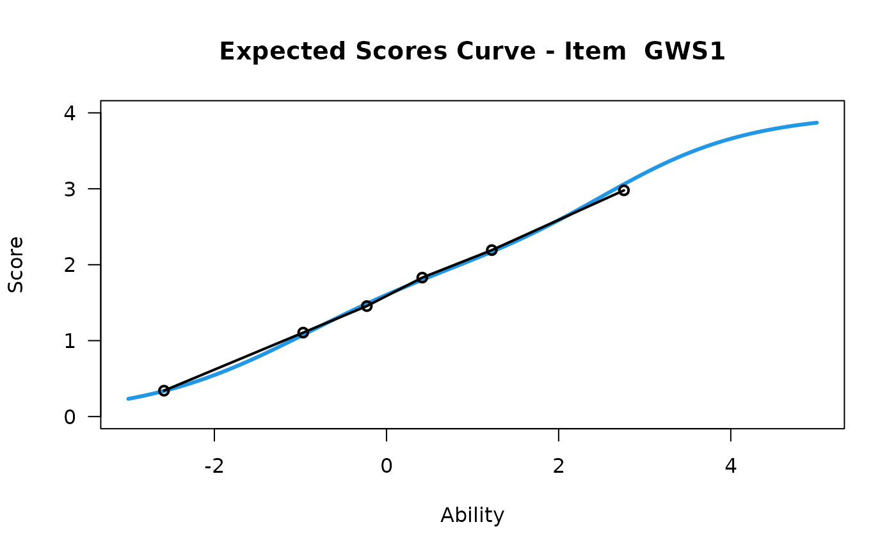
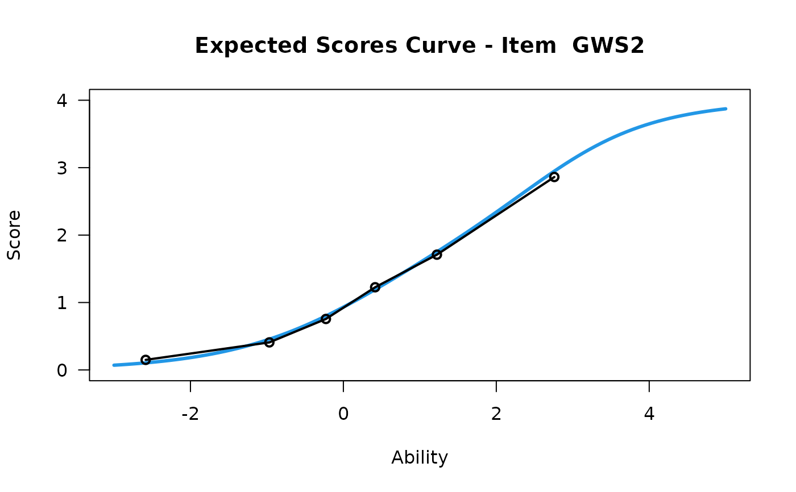
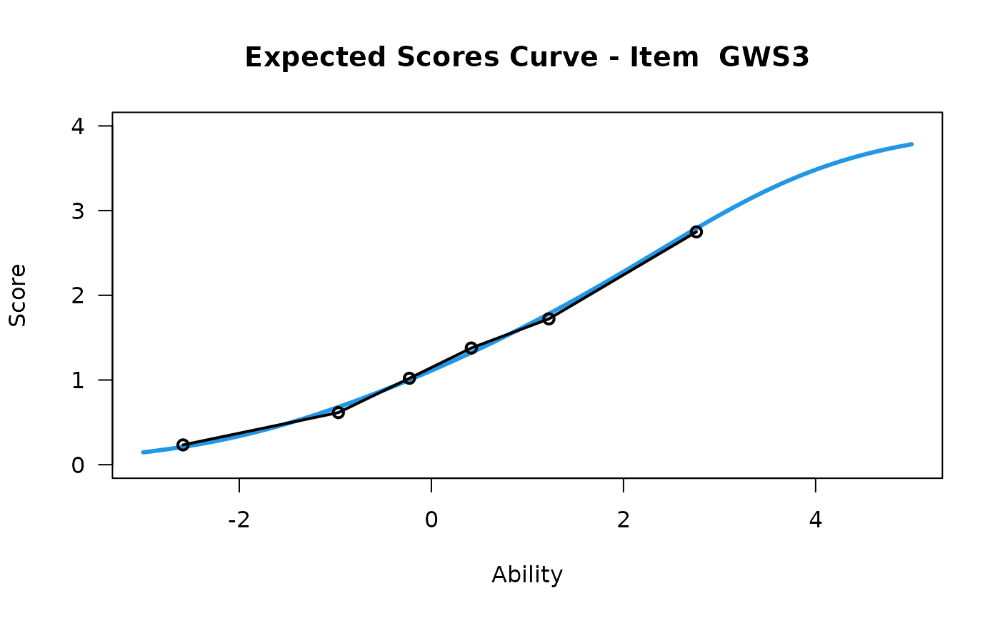
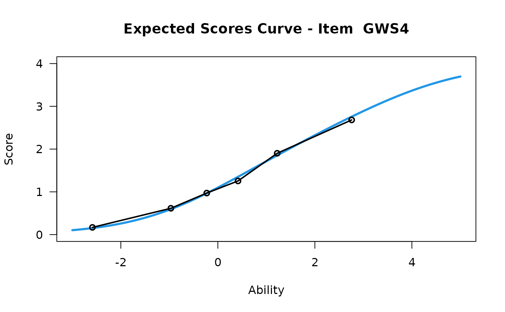
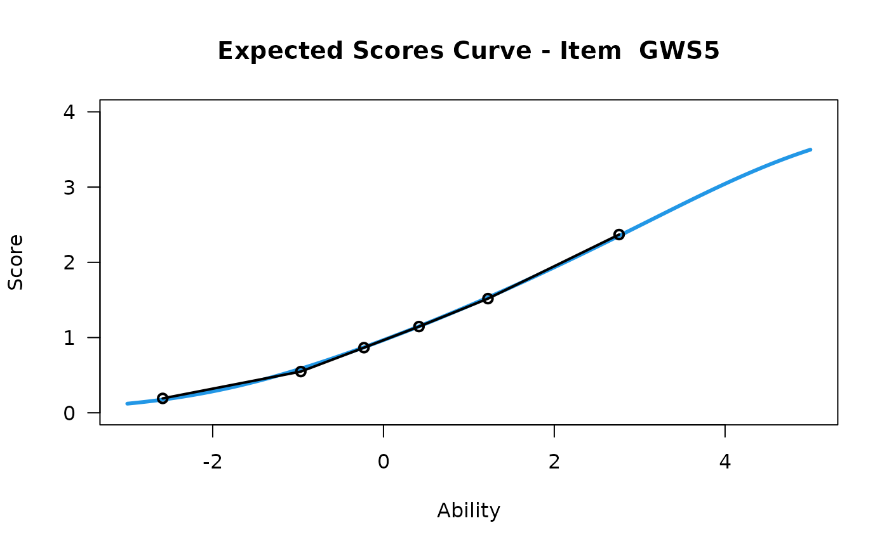
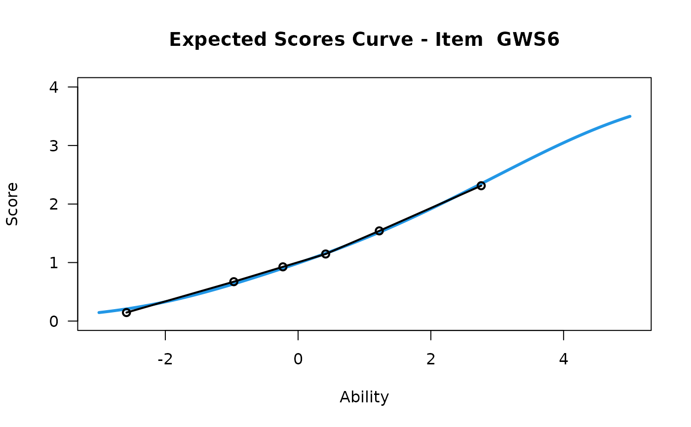
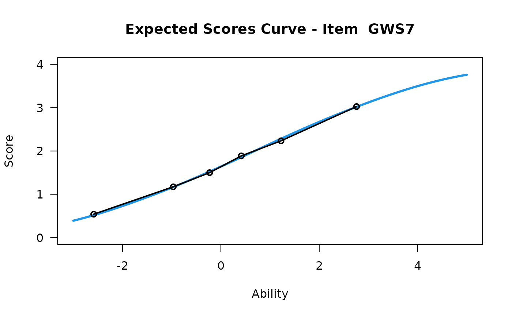
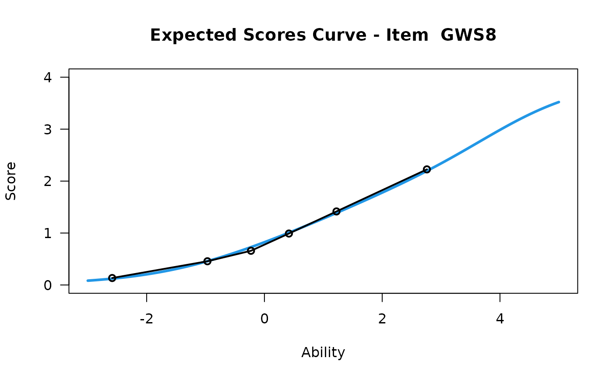
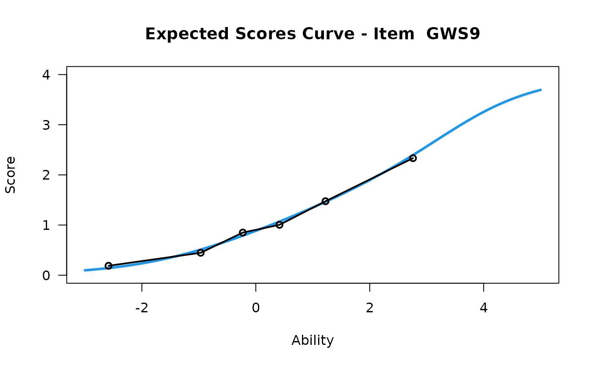

Detection of statistically significant differential item functioning via ANCOVA of standardized Rasch residuals
dif.Rasch.RdDetection of statistically significant differential item functioning via ANCOVA of standardized Rasch residuals
Examples
# Lowest response category must be scored as 0
work_stress0 <- work_stress[1:9] - 1
## Fit the partial credit model
myRasch <- Simple.Rasch(work_stress0, "PCM2")
#> ------------------------------------------------------------
#> TAM 4.2-21 (2024-02-19 18:52:08)
#> R version 4.4.2 (2024-10-31) x86_64, linux-gnu | nodename=fv-az570-222 | login=unknown
#>
#> Date of Analysis: 2024-12-13 12:39:31.831637
#> Time difference of 0.2037 secs
#> Computation time: 0.2037
#>
#> Multidimensional Item Response Model in TAM
#>
#> IRT Model: PCM2
#> Call:
#> TAM::tam.mml(resp = raschdata, irtmodel = irtmodel, verbose = FALSE)
#>
#> ------------------------------------------------------------
#> Number of iterations = 83
#> Numeric integration with 21 integration points
#>
#> Deviance = 26897
#> Log likelihood = -13448
#> Number of persons = 1377
#> Number of persons used = 1377
#> Number of items = 9
#> Number of estimated parameters = 37
#> Item threshold parameters = 36
#> Item slope parameters = 0
#> Regression parameters = 0
#> Variance/covariance parameters = 1
#>
#> AIC = 26971 | penalty=74 | AIC=-2*LL + 2*p
#> AIC3 = 27008 | penalty=111 | AIC3=-2*LL + 3*p
#> BIC = 27164 | penalty=267.42 | BIC=-2*LL + log(n)*p
#> aBIC = 27047 | penalty=149.78 | aBIC=-2*LL + log((n-2)/24)*p (adjusted BIC)
#> CAIC = 27201 | penalty=304.42 | CAIC=-2*LL + [log(n)+1]*p (consistent AIC)
#> AICc = 26973 | penalty=76.1 | AICc=-2*LL + 2*p + 2*p*(p+1)/(n-p-1) (bias corrected AIC)
#> GHP = 1.088 | GHP=( -LL + p ) / (#Persons * #Items) (Gilula-Haberman log penalty)
#>
#> ------------------------------------------------------------
#> EAP Reliability
#> [1] 0.907
#> ------------------------------------------------------------
#> Covariances and Variances
#> [,1]
#> [1,] 2.854
#> ------------------------------------------------------------
#> Correlations and Standard Deviations (in the diagonal)
#> [,1]
#> [1,] 1.689
#> ------------------------------------------------------------
#> Regression Coefficients
#> [,1]
#> [1,] 0
#> ------------------------------------------------------------
#> Item Parameters -A*Xsi
#> item N M xsi.item AXsi_.Cat1 AXsi_.Cat2 AXsi_.Cat3 AXsi_.Cat4
#> 1 GWS1 1377 1.601 0.775 -1.635 -2.141 0.139 3.100
#> 2 GWS2 1377 1.136 1.455 -0.373 0.407 2.913 5.821
#> 3 GWS3 1377 1.240 1.410 -1.191 -0.330 2.086 5.640
#> 4 GWS4 1377 1.224 1.527 -0.786 -0.177 2.091 6.109
#> 5 GWS5 1377 1.067 1.989 -0.990 0.253 3.320 7.956
#> 6 GWS6 1377 1.084 1.956 -1.201 0.147 3.183 7.824
#> 7 GWS7 1377 1.680 0.685 -2.406 -2.584 -1.033 2.740
#> 8 GWS8 1377 0.942 2.198 -0.575 0.892 4.403 8.791
#> 9 GWS9 1377 1.013 1.910 -0.750 0.635 3.803 7.642
#> B.Cat1.Dim1 B.Cat2.Dim1 B.Cat3.Dim1 B.Cat4.Dim1
#> 1 1 2 3 4
#> 2 1 2 3 4
#> 3 1 2 3 4
#> 4 1 2 3 4
#> 5 1 2 3 4
#> 6 1 2 3 4
#> 7 1 2 3 4
#> 8 1 2 3 4
#> 9 1 2 3 4
#>
#> Item Parameters Xsi
#> xsi se.xsi
#> GWS1 0.775 0.039
#> GWS2 1.455 0.038
#> GWS3 1.410 0.040
#> GWS4 1.527 0.039
#> GWS5 1.989 0.043
#> GWS6 1.956 0.043
#> GWS7 0.685 0.040
#> GWS8 2.198 0.043
#> GWS9 1.910 0.042
#> GWS1_step1 -2.410 0.078
#> GWS1_step2 -1.281 0.065
#> GWS1_step3 1.505 0.093
#> GWS2_step1 -1.828 0.067
#> GWS2_step2 -0.675 0.071
#> GWS2_step3 1.051 0.112
#> GWS3_step1 -2.601 0.071
#> GWS3_step2 -0.548 0.070
#> GWS3_step3 1.005 0.107
#> GWS4_step1 -2.313 0.071
#> GWS4_step2 -0.919 0.070
#> GWS4_step3 0.741 0.101
#> GWS5_step1 -2.979 0.072
#> GWS5_step2 -0.747 0.074
#> GWS5_step3 1.078 0.130
#> GWS6_step1 -3.157 0.073
#> GWS6_step2 -0.609 0.075
#> GWS6_step3 1.080 0.130
#> GWS7_step1 -3.091 0.086
#> GWS7_step2 -0.863 0.066
#> GWS7_step3 0.866 0.081
#> GWS8_step1 -2.773 0.069
#> GWS8_step2 -0.731 0.078
#> GWS8_step3 1.313 0.152
#> GWS9_step1 -2.660 0.069
#> GWS9_step2 -0.526 0.076
#> GWS9_step3 1.258 0.138
#>
#> Item Parameters in IRT parameterization
#> item alpha beta tau.Cat1 tau.Cat2 tau.Cat3 tau.Cat4
#> 1 GWS1 1 0.775 -2.410 -1.281 1.505 2.186
#> 2 GWS2 1 1.455 -1.828 -0.675 1.051 1.452
#> 3 GWS3 1 1.410 -2.601 -0.548 1.005 2.144
#> 4 GWS4 1 1.527 -2.313 -0.919 0.741 2.491
#> 5 GWS5 1 1.989 -2.979 -0.747 1.078 2.647
#> 6 GWS6 1 1.956 -3.157 -0.609 1.080 2.686
#> 7 GWS7 1 0.685 -3.091 -0.863 0.866 3.088
#> 8 GWS8 1 2.198 -2.773 -0.731 1.313 2.190
#> 9 GWS9 1 1.910 -2.660 -0.526 1.258 1.928
#> Iteration in WLE/MLE estimation 1 | Maximal change 2.5957
#> Iteration in WLE/MLE estimation 2 | Maximal change 0.9823
#> Iteration in WLE/MLE estimation 3 | Maximal change 0.5808
#> Iteration in WLE/MLE estimation 4 | Maximal change 0.1707
#> Iteration in WLE/MLE estimation 5 | Maximal change 0.0036
#> Iteration in WLE/MLE estimation 6 | Maximal change 0.0002
#> Iteration in WLE/MLE estimation 7 | Maximal change 0
#> ----
#> WLE Reliability= 0.886









#> ....................................................
#> Plots exported in png format into folder:
#> /home/runner/work/itemselectr/itemselectr/docs/reference/Plots
#> Error: Package 'plyr' is needed for applying this
#> function. Please install it.
## Perform the DIF analysis using the standardized residuals, Rasch person measure and group as input
dif.Rasch(myRasch$std.residuals, myRasch$thetas[,1], work_stress$gender)
#> Error: object 'myRasch' not found